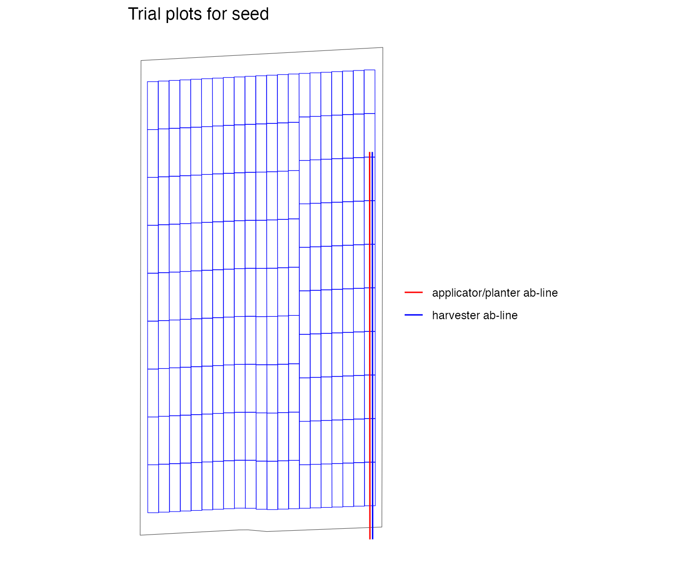
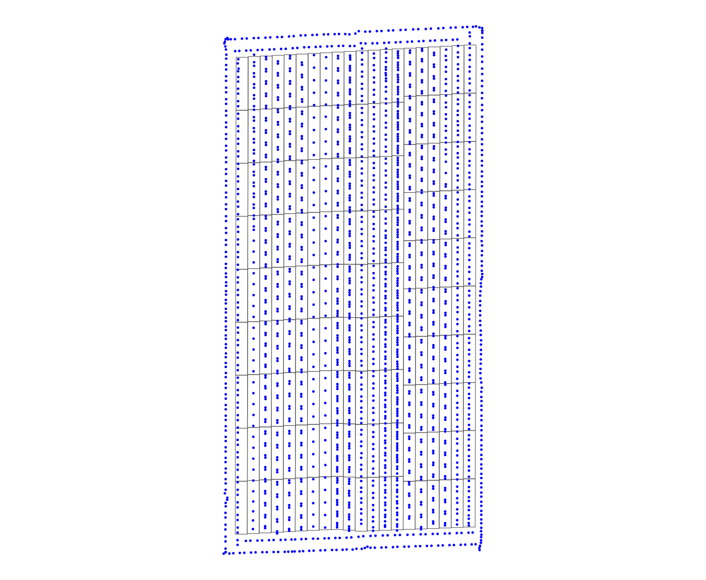

Trial AB-line Types and Options
V2-ab-line.RmdLoad the ofpetrial package
AB-line is the driving direction of a machine. In practice, a farmer uploads AB-lines into the machine and can choose between these AB-lines at the time of operation. While this AB-line indicates the driving direction of the machine, it can also be used to center the machine on this line. Centering the machine on the AB-line becomes important when conducting OFPEs.
The function make_input_plot_data contains several
options for abline_type: “free”, “lock”, and “none”. When
abline_type = "lock", the resulting experimental plots will
be centered on the initial AB-line given by abline_data,
and the AB-line returned by the write_trial_files function
will be identical to that in abline_data. If
abline_type equals “free”, the experimental plots are also
centered on the AB-line, but the AB-lines returned by the
write_trial_files function are created to be in the first
and last rows of the experimental plot. Then the farmer can choose the
side where they prefer to start. Generally, the “free” option is best
unless there is a reason the farmer or operator needs to start in a
specific part of the field. Finally, the “none” option is similar to
lock but it will not return a new AB-line for the trial, assuming that
the line in abline_data will be used.
The following example uses a seeding trial to demonstrate the three
options for abline_type. When visualizing the trial plots
and AB-line with viz_layout, the differences between these
options are clearer as the AB-line shifts or is not included.
input_plot_info <-
prep_plot(
input_name = "seed",
unit_system = "imperial",
machine_width = 60,
section_num = 24,
harvester_width = 30,
plot_width = 60
)
#> For seed, there is a plot width that is smaller than the plot width you suggested and avoids mixed treatement problem. It is suggested that you use 30 as the plot width.
exp_plots_free <-
make_exp_plots(
input_plot_info = input_plot_info,
boundary_data = system.file("extdata", "boundary-simple1.shp", package = "ofpetrial"),
abline_data = system.file("extdata", "ab-line-simple1.shp", package = "ofpetrial"),
abline_type = "free"
)
#> Linking to GEOS 3.11.0, GDAL 3.5.3, PROJ 9.1.0; sf_use_s2() is TRUE
#> Warning: There was 1 warning in `dplyr::mutate()`.
#> ℹ In argument: `experiment_plots_dissolved = list(...)`.
#> ℹ In row 1.
#> Caused by warning:
#> ! package 'sf' was built under R version 4.2.3
viz(exp_plots_free, type = "layout", abline = TRUE)
exp_plots_lock <-
make_exp_plots(
input_plot_info = input_plot_info,
boundary_data = system.file("extdata", "boundary-simple1.shp", package = "ofpetrial"),
abline_data = system.file("extdata", "ab-line-simple1.shp", package = "ofpetrial"),
abline_type = "lock"
)
viz(exp_plots_lock, type = "layout", abline = TRUE)
exp_plots_none <-
make_exp_plots(
input_plot_info = input_plot_info,
boundary_data = system.file("extdata", "boundary-simple1.shp", package = "ofpetrial"),
abline_data = system.file("extdata", "ab-line-simple1.shp", package = "ofpetrial"),
abline_type = "none"
)
exp_plots_none$ab_lines
#> [[1]]
#> NULLThere are also different ways to create an initial AB-line. If there
is an existing AB-line shapefile, then include the pathway to this file
in abline_data. If there is a past as-applied, as-planted
or yield shapefile, the trial can also be centered on the paths from
that previous operation. This pathway is included in ???. Using the
points in the past file, an AB-line will be created. As the initial file
AB-line has no specific AB-line location, the abline_type
is “free”.
The sample data as-applied-simple1.shp is a soybean
planting map from a trial with a 60-foot planter We can use this data to
create an AB-line for a new soybean trial with the same equipment.
aa <- system.file("extdata", "as-applied-simple1.shp", package = "ofpetrial") %>%
sf::st_read()
#> Reading layer `as-applied-simple1' from data source
#> `/private/var/folders/t4/5gnqprbn38nftyxkyk5hdwmd8hnypy/T/Rtmp6MTpM7/temp_libpath57d63573d32d/ofpetrial/extdata/as-applied-simple1.shp'
#> using driver `ESRI Shapefile'
#> Simple feature collection with 2081 features and 3 fields
#> Geometry type: POINT
#> Dimension: XY
#> Bounding box: xmin: -16.70071 ymin: 39.11965 xmax: -16.69615 ymax: 39.12687
#> Geodetic CRS: WGS 84
plot(aa$geometry, pch = 1, cex = .1)
input_plot_info <-
prep_plot(
input_name = "seed",
unit_system = "imperial",
machine_width = 60,
section_num = 1,
harvester_width = 60,
plot_width = 60
)
#>
exp_plots_aa <-
make_exp_plots(
input_plot_info = input_plot_info,
boundary_data = system.file("extdata", "boundary-simple1.shp", package = "ofpetrial"),
abline_data = system.file("extdata", "as-applied-simple1.shp", package = "ofpetrial"),
abline_type = "lock"
)
viz(exp_plots_aa, type = "layout", abline = TRUE)
ggplot() +
geom_sf(data = exp_plots_aa$exp_plots[[1]], fill = NA) +
geom_sf(data = aa, color = "blue", size = 0.25) +
theme_void()